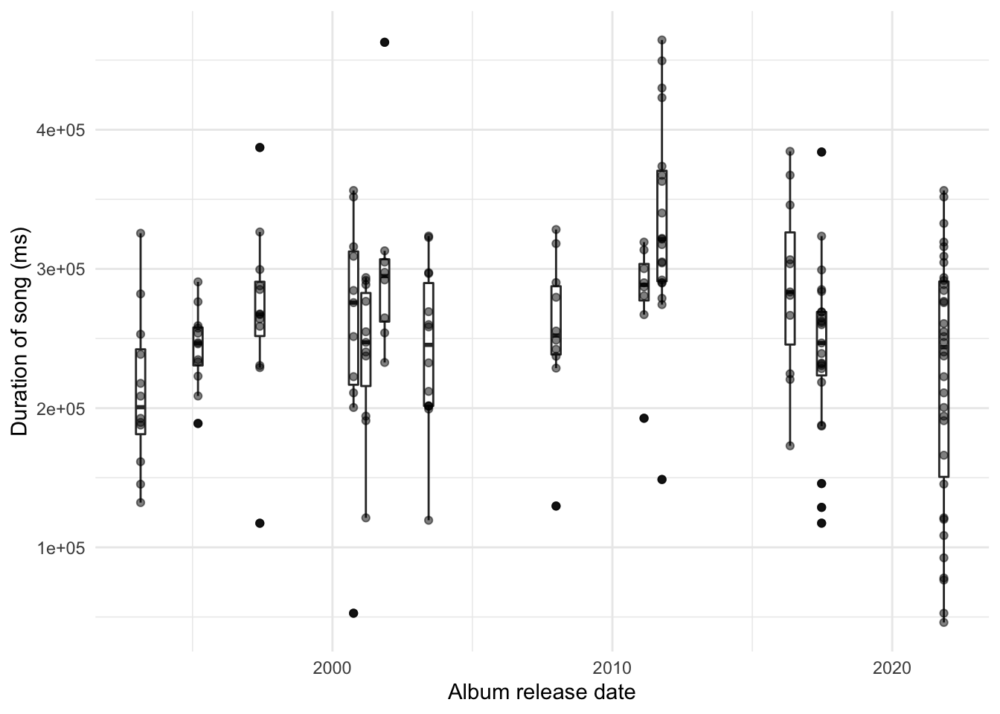
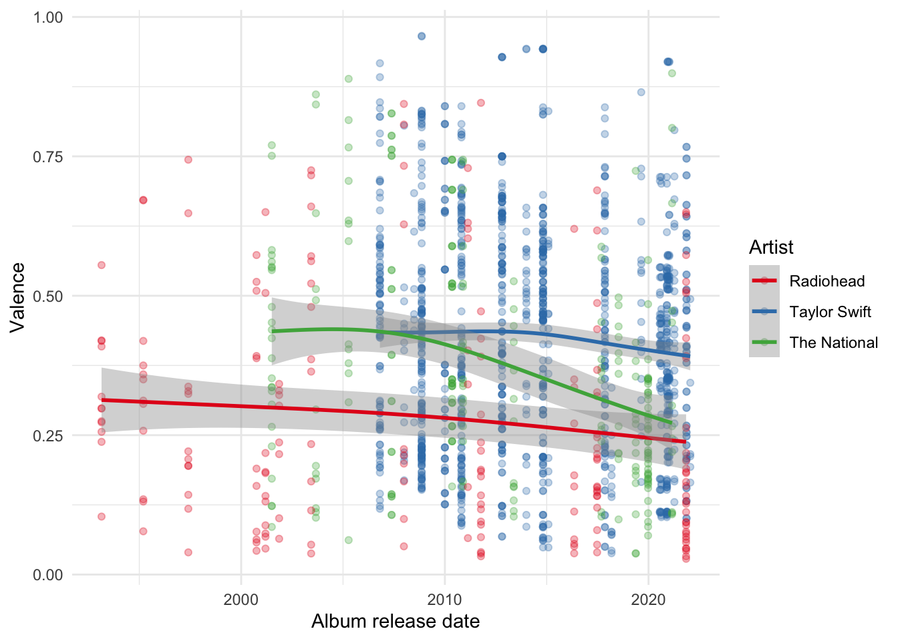
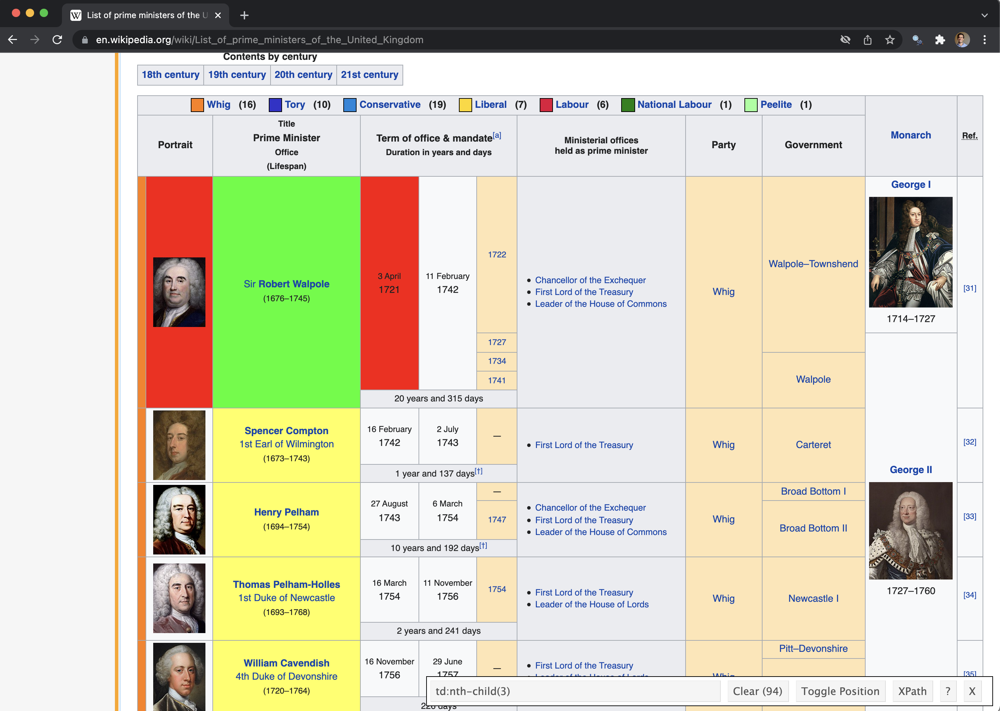
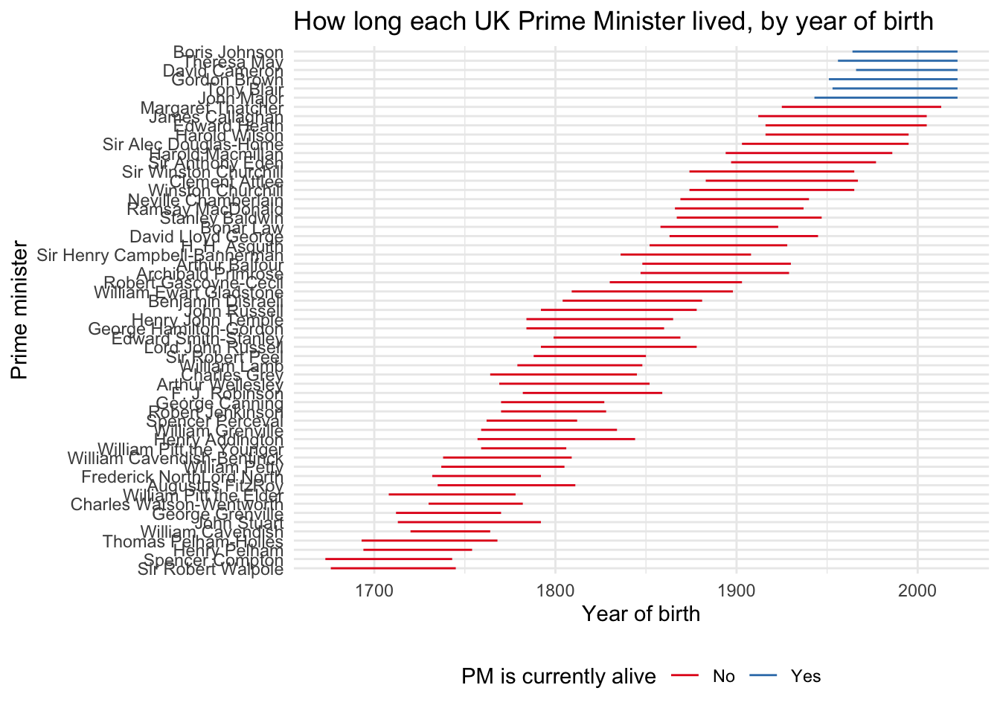
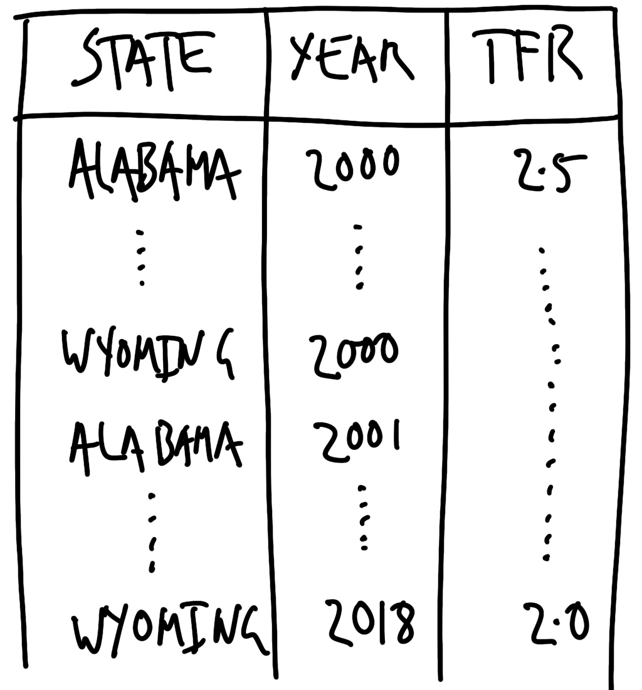

library(httr)
library(tidyverse)
library(xml2)
arxiv <-
GET("http://export.arxiv.org/api/query?id_list=2111.09299")
status_code(arxiv)[1] 200Required material
Key concepts and skills
Key packages and functions
download.file()factor()function()set.seed()sys.sleep()httr (Wickham 2019a)
GET()content()jsonlite (Ooms 2014)
fromJSON()pdftools (Ooms 2019a)
pdf_text()purrr (Henry and Wickham 2020)
walk2()rtweet (Kearney 2019)
get_favorites()get_friends()get_timelines()search_tweets()rvest (Wickham 2019b)
html_nodes()html_text()spotifyr (Thompson et al. 2020)
get_artist_audio_features()tesseract (Ooms 2019b)
ocr()tidyverse (Wickham et al. 2019) (need to be loaded separately e.g. library("haven"))
lubridate (Grolemund and Wickham 2011)
ymd()usethis (Wickham and Bryan 2020)
edit_r_environ()xml2 (Wickham, Hester, and Ooms 2021)
read_xml()html_structure()xml_child()xml_attr()xml_text()In this chapter we consider data that we must gather ourselves. This means that although the observations exist, we have to parse, pull, clean, and prepare them into the dataset that we will consider. In contrast to farmed data, discussed in Chapter 8, typically, these felicitous observations are not being made available for us for the purpose of analysis. This means we need to be especially concerned with documentation, inclusion and exclusion decisions, missing data, and ethical behavior.
As a preeminent example of such a gathered dataset, consider Cummins (2022) who use individual-level probate records from England between 1892 and 1992 to create a dataset that they then use to estimate how much wealth was being hidden. They find that about a third of the inheritance of “elites” is concealed. Wills are clearly not created for the purpose of being included in a dataset, but with a respectful approach they enable insights that we could not get by other means.
Decisions need to be made at the start of a project about the values we want the project to have. For instance, Saulnier et al. (2022) value transparency, reproducibility, fairness, being self-critical, and giving credit. How might that affect the project? Valuing “giving credit” might mean being especially zealous about considering attribution and licensing. And being “self-critical” might mean going out of one’s way to not make more of results than is appropriate.
The results of a data science workflow will never be better than their data (Bailey 2008). And even the best statistical analysis will struggle to adjust for poorly gathered data. This means when working in a team, it is important that data gathering is conducted and overseen by the senior members of the team. And when working by oneself, it is important to give special consideration and care to this stage.
In this chapter we go through a variety of approaches for gathering data. We begin with the use of APIs and semi-structured data, such as JSON and XML. These are situations in which data providers typically specify the conditions under they are comfortable providing access. An API allows us to write code to gather data. Making data available in this way is a critical aspect of technology firms. It is especially valuable because it can be efficient and scales well.
We then turn to web scraping, which we may want to use when there are data available on a website. As these data have typically not been put together for the purposes of being a dataset, it is especially important to have deliberate and definite values for the project. Scraping is a critical part of data gathering because there are many data sources where the priorities of the data provider mean they have not implemented an API. For instance, considerable use of web scraping was critical for creating COVID-19 dashboards in the early days of the pandemic (Eisenstein 2022).
Finally, we consider gathering data from PDFs. While less common than needing to gather data from APIs or scraping, gathering data from PDFs opens up critical datasets, especially those contained in government reports and old books.
Gathering data requires more of us than using farmed data, but it allows us to explore especially exciting datasets and answer questions that we could not otherwise. Some of the most exciting work in the world uses gathered data, but it is especially important that we approach it with respect.
In everyday language, and for our purposes, an Application Programming Interface (API) is a situation in which someone has set up specific files on their computer such that we can follow their instructions to get them. For instance, when we use a gif on Slack, Slack asks Giphy’s server for the appropriate gif, Giphy’s server gives that gif to Slack and then Slack inserts it into chat. The way in which Slack and Giphy interact is determined by Giphy’s API. More strictly, an API is just an application that runs on a server that we access using the HTTP protocol.
Here we focus on using APIs for gathering data. And so, with that focus, an API is a website that is set-up for another computer to be able to access, rather than a person. For instance, we could go to Google Maps. And we could then scroll and click and drag to center the map on, say, Canberra, Australia. Or we could paste this link into the browser. By pasting that link, rather than navigating, we have mimicked how we will use an API: provide it with a URL and be given something back. In this case the result should be a map similar to Figure 9.1.
The advantage of using an API is that the data provider specifies exactly the data that they are willing to provide, and the terms under which they will provide it. These terms may include aspects such as rate limits (i.e. how often we can ask for data), and what we can do with the data, for instance, we might not be allowed to use it for commercial purposes, or to republish it. Additionally, because the API is being provided specifically for us to use it, it is less likely to be subject to unexpected changes or legal issues. Because of this it is clear that when an API is available, we should try to use it rather than web scraping.
We will now go through a few case studies of using APIs. In the first we deal directly with an API using httr (Wickham 2019a). In the second we access data from Twitter using rtweet (Kearney 2019). And in the third we access data from Spotify using spotifyr (Thompson et al. 2020). Developing comfort with gathering data through APIs enables access to exciting datasets. For instance, Wong (2020) use the Facebook Political Ad API to gather all 218,100 of the Trump 2020 campaign ads to better understand the campaign.
We use GET() from httr (Wickham 2019a) to obtain data from an API directly. This will try to get some specific data and the main argument is “url”. In a way, this is similar to the earlier Google Maps example. In that example, the specific information that we were interested in was a map.
In this case study we will use an API provided by arXiv. arXiv is an online repository for academic papers before they go through peer-review, and these are typically referred to as “pre-prints”. After installing and loading httr, we use GET() to ask arXiv to obtain some information about the pre-print of Alexander and Alexander (2021).
library(httr)
library(tidyverse)
library(xml2)
arxiv <-
GET("http://export.arxiv.org/api/query?id_list=2111.09299")
status_code(arxiv)[1] 200We can use status_code() to check whether we received an error from the server. And assuming we received something back from the server, we can use content() to display the information. In this case we have received XML formatted data. XML is a markup language where entries are identified by tags, which can be nested within other tags. We can read XML using read_xml() from xml2 (Wickham, Hester, and Ooms 2021). XML is a semi-formatted structure, and it can be useful to start by having a look at it using html_structure().
content(arxiv) |>
read_xml() |>
html_structure()<feed [xmlns]>
<link [href, rel, type]>
<title [type]>
{text}
<id>
{text}
<updated>
{text}
<totalResults [xmlns:opensearch]>
{text}
<startIndex [xmlns:opensearch]>
{text}
<itemsPerPage [xmlns:opensearch]>
{text}
<entry>
<id>
{text}
<updated>
{text}
<published>
{text}
<title>
{text}
<summary>
{text}
<author>
<name>
{text}
<author>
<name>
{text}
<comment [xmlns:arxiv]>
{text}
<link [href, rel, type]>
<link [title, href, rel, type]>
<primary_category [term, scheme, xmlns:arxiv]>
<category [term, scheme]>We might be interested to create a dataset based on extracting various aspects of this XML tree. For instance, we might look at “entry”, which is the eighth item, and in particular obtain the “title” and the “URL”, which are the fourth and ninth items, respectively, within “entry”.
data_from_arxiv <-
tibble(
title = content(arxiv) |>
read_xml() |>
xml_child(search = 8) |>
xml_child(search = 4) |>
xml_text(),
link = content(arxiv) |>
read_xml() |>
xml_child(search = 8) |>
xml_child(search = 9) |>
xml_attr("href")
)
data_from_arxiv# A tibble: 1 × 2
title link
<chr> <chr>
1 "The Increased Effect of Elections and Changing Prime Ministers on Topi… http…To consider another example, each day NASA provides the Astronomy Picture of the Day (APOD) through its APOD API. We can again use GET() to obtain the URL for the photo on particular dates and then display it.
NASA_APOD_20211226 <-
GET("https://api.nasa.gov/planetary/apod?api_key=DEMO_KEY&date=2021-12-26")
NASA_APOD_20190719 <-
GET("https://api.nasa.gov/planetary/apod?api_key=DEMO_KEY&date=2019-07-19")Examining the returned data using content(), we can see that we are provided with various fields, such as date, title, explanation, and a URL. And we can provide that URL to include_graphics() from knitr to display it (Figure 9.2).
# APOD December 26, 2021
content(NASA_APOD_20211226)$date[1] "2021-12-26"content(NASA_APOD_20211226)$title[1] "James Webb Space Telescope over Earth"content(NASA_APOD_20211226)$explanation[1] "There's a big new telescope in space. This one, the James Webb Space Telescope (JWST), not only has a mirror over five times larger than Hubble's in area, but can see better in infrared light. The featured picture shows JWST high above the Earth just after being released by the upper stage of an Ariane V rocket, launched yesterday from French Guiana. Over the next month, JWST will move out near the Sun-Earth L2 point where it will co-orbit the Sun with the Earth. During this time and for the next five months, JWST will unravel its segmented mirror and an array of sophisticated scientific instruments -- and test them. If all goes well, JWST will start examining galaxies across the universe and planets orbiting stars across our Milky Way Galaxy in the summer of 2022. APOD Gallery: Webb Space Telescope Launch"content(NASA_APOD_20211226)$url[1] "https://apod.nasa.gov/apod/image/2112/JwstLaunch_Arianespace_1080.jpg"# APOD July 19, 2019
content(NASA_APOD_20190719)$date[1] "2019-07-19"content(NASA_APOD_20190719)$title[1] "Tranquility Base Panorama"content(NASA_APOD_20190719)$explanation[1] "On July 20, 1969 the Apollo 11 lunar module Eagle safely touched down on the Moon. It landed near the southwestern corner of the Moon's Mare Tranquillitatis at a landing site dubbed Tranquility Base. This panoramic view of Tranquility Base was constructed from the historic photos taken from the lunar surface. On the far left astronaut Neil Armstrong casts a long shadow with Sun is at his back and the Eagle resting about 60 meters away ( AS11-40-5961). He stands near the rim of 30 meter-diameter Little West crater seen here to the right ( AS11-40-5954). Also visible in the foreground is the top of the camera intended for taking stereo close-ups of the lunar surface."content(NASA_APOD_20190719)$url[1] "https://apod.nasa.gov/apod/image/1907/apollo11TranquilitybasePan600h.jpg"
Finally, another common API response in semi-structured form is JSON. JSON is a human-readable way to store data that can be parsed by machines. In contrast to, say, a CSV, where we are used to rows and columns, JSON uses key-value pairs.
{
"firstName": "Rohan",
"lastName": "Alexander",
"age": 36,
"favFoods": {
"first": "Pizza",
"second": "Bagels",
"third": null
}
}We can parse JSON with jsonlite (Ooms 2014). To consider a specific example, a “Dataverse” is a web application that makes it easier to share dataset. We can use an API to query a demonstration dataverse. For instance, we might be interested in datasets related to politics.
library(jsonlite)
politics_datasets <-
fromJSON("https://demo.dataverse.org/api/search?q=politics")We can also look at the dataset using View(politics_datasets), which allows us to expand the tree based on what we are interested in. We can even get the code that we need to focus on different aspects by hovering on the item and then clicking the icon with the green arrow (Figure 9.3).

This tells us how to obtain the dataset of interest.
as_tibble(politics_datasets[["data"]][["items"]])# A tibble: 3 × 23
name type url ident…¹ descr…² publi…³ globa…⁴ publi…⁵ citat…⁶ ident…⁷
<chr> <chr> <chr> <chr> <chr> <chr> <chr> <chr> <chr> <chr>
1 China Arc… data… http… china-… Introd… 2016-1… <NA> <NA> <NA> <NA>
2 Multiscop… data… http… <NA> The su… 2022-0… doi:10… UniDat… "Istat… dassi
3 Aspetti d… data… http… <NA> The su… 2022-0… doi:10… UniDat… "Istat… dassi
# … with 13 more variables: name_of_dataverse <chr>, citation <chr>,
# storageIdentifier <chr>, subjects <list>, fileCount <int>, versionId <int>,
# versionState <chr>, majorVersion <int>, minorVersion <int>,
# createdAt <chr>, updatedAt <chr>, contacts <list>, authors <list>, and
# abbreviated variable names ¹identifier, ²description, ³published_at,
# ⁴global_id, ⁵publisher, ⁶citationHtml, ⁷identifier_of_dataverse
# ℹ Use `colnames()` to see all variable namesTwitter is a rich source of text and other data and an extraordinary amount of academic research uses it (Pfeffer et al. 2022) The Twitter API is the way in which Twitter asks that we gather these data. rtweet (Kearney 2019) is built around this API and allows us to interact with it in ways that are similar to using any other R package. Initially, we can use the Twitter API with just a regular Twitter account.
Begin by installing and loading rtweet and tidyverse. We then need to authorize rtweet and we start that process by calling any function from the package, for instance get_favorites() which would normally return a tibble of a user’s favorites. When it is executed before authorization, this will open a browser, and we then log into a regular Twitter account (Figure 9.4).
library(rtweet)
library(tidyverse)get_favorites(user = "RohanAlexander")
Once the application is authorized, we can use get_favorites() to actually get the favorites of a user and save them.
rohans_favorites <- get_favorites("RohanAlexander")
saveRDS(rohans_favorites, "rohans_favorites.rds")We could then look at some recent favorites, keeping in mind that they may be different depending on when they are being accessed.
rohans_favorites |>
arrange(desc(created_at)) |>
slice(1:10) |>
select(screen_name, text)# A tibble: 10 × 2
screen_name text
<chr> <chr>
1 flynnpolsci "I put together some quick thoughts after year 1 as a program…
2 michaelhoffman "What's it called when you subtweet someone, and then they re…
3 mitani_aa "Congratulations @xinyangfeng2333 for a superb MSc defense!!!…
4 apreshill "@dgkeyes What an esteemed lineup 🤩"
5 nedasoc "during the hours the mini is in school this week, i need to …
6 ryancbriggs "@Geo_Gingerbeard it gets worse"
7 lisalendway "I modified it to add, “or they’ll make it themselves.” https…
8 dgkeyes "Been doing a lot of interviews for my book. Will also be rel…
9 evanrobertsnz "Signed, someone hailing from a country that has many things …
10 max_d_rohde "Logistic regression is a great starting point for understand…We can use search_tweets() to search for tweets about a particular topic. For instance, we could look at tweets using a hashtag commonly associated with R: “#rstats”.
rstats_tweets <- search_tweets(
q = "#rstats",
include_rts = FALSE
)
saveRDS(rstats_tweets, "rstats_tweets.rds")rstats_tweets |>
select(screen_name, text) |>
head()# A tibble: 6 × 2
screen_name text
<chr> <chr>
1 SuccessAnalytiX "The Science of Success \n\nhttps://t.co/xLM2OrqHBd\n\n#BigDa…
2 babycoin_dev "BabyCoin (BABY)\n\nGUI wallet v2.05 => https://t.co/CFNtp…
3 rstatsdata "#rdata #rstats: Yield of 6 barley varieties at 18 locations …
4 PDH_SciTechNews "#Coding Arm Puts Security Architecture to the Test With New …
5 PDH_SciTechNews "#Coding Network Engineer: Skills, Roles & Responsibiliti…
6 PDH_SciTechNews "#Coding CockroachDB Strengthens Change Data Capture - iProgr…Other useful functions that can be used include get_friends() to get all the accounts that a user follows, and get_timelines() to get a user’s recent tweets. Registering as a developer enables access to more Twitter API functionality.
When using APIs, even when they are wrapped in an R package, in this case rtweet, it is important to read the terms under which access is provided. The Twitter API docs are surprisingly readable, and the developer policy is especially clear. To see how easy it is to violate the terms under which an API provider makes data available, consider that we saved the tweets that we downloaded. If we were to push these to GitHub, then it is possible that we may have accidentally stored sensitive information if there happened to be some in the tweets. Twitter is also explicit about asking those that use their API to be especially careful about sensitive information and not matching Twitter users with their off-Twitter identity. Again, the documentation around these restricted uses is clear and readable.
We use spotifyr (Thompson et al. 2020), which is a wrapper around the Spotify API. Install and load the package.
install.packages("spotifyr")library(spotifyr)To access the Spotify API, we need a Spotify Developer Account. This will require logging in with a Spotify account and then accepting the Developer Terms (Figure 9.5).

Continuing with the registration process; in our case, we “do not know” what we are building and so Spotify requires us to use a non-commercial agreement. To use the Spotify API we need a “Client ID” and a “Client Secret”. These are things that we want to keep to ourselves because anyone with the details could use our developer account as though they were us. One way to keep these details secret with a minimum of hassle is to keep them in our “System Environment”. In this way, when we push to GitHub they should not be included. (We followed this process without explanation in Chapter 7 when we used mapdeck.) To do this we will use usethis (Wickham and Bryan 2020) to modify our System Environment. In particular, there is a file called “.Renviron” which we will open and then add our “Client ID” and “Client Secret”.
library(usethis)
edit_r_environ()When we run edit_r_environ(), our “.Renviron” file will open and we can add our “Spotify Client ID” and “Client Secret”. It is important to use the same names, because spotifyr will look in our environment for keys with those specific names.
SPOTIFY_CLIENT_ID <- "PUT_YOUR_CLIENT_ID_HERE"
SPOTIFY_CLIENT_SECRET <- "PUT_YOUR_SECRET_HERE"Save the “.Renviron” file, and then restart R (“Session” -> “Restart R”). We can now use our “Spotify Client ID” and “Client Secret” as needed. And functions that require those details as arguments will work without them being explicitly specified again.
To try this out we will get and save some information about Radiohead, the English rock band, using get_artist_audio_features(). One of the required arguments is authorization, but as that is set, by default, to look at the “.Renviron” file, we do not need to specify it here.
radiohead <- get_artist_audio_features("radiohead")
saveRDS(radiohead, "radiohead.rds")radiohead <- readRDS("radiohead.rds")There is a variety of information available based on songs. We might be interested to see whether their songs are getting longer over time (Figure 9.6). And following the guidance in Chapter 6 this might be a nice opportunity to additionally use a boxplot to communicate summary statistics, by album at the same time.
radiohead <- as_tibble(radiohead)
radiohead |>
select(artist_name, track_name, album_name)# A tibble: 193 × 3
artist_name track_name album_name
<chr> <chr> <chr>
1 Radiohead Everything In Its Right Place KID A MNESIA
2 Radiohead Kid A KID A MNESIA
3 Radiohead The National Anthem KID A MNESIA
4 Radiohead How to Disappear Completely KID A MNESIA
5 Radiohead Treefingers KID A MNESIA
6 Radiohead Optimistic KID A MNESIA
7 Radiohead In Limbo KID A MNESIA
8 Radiohead Idioteque KID A MNESIA
9 Radiohead Morning Bell KID A MNESIA
10 Radiohead Motion Picture Soundtrack KID A MNESIA
# … with 183 more rows
# ℹ Use `print(n = ...)` to see more rowslibrary(lubridate)
radiohead |>
mutate(album_release_date = ymd(album_release_date)) |>
ggplot(aes(
x = album_release_date,
y = duration_ms,
group = album_release_date
)) +
geom_boxplot() +
geom_jitter(alpha = 0.5, width = 0.3, height = 0) +
theme_minimal() +
labs(
x = "Album release date",
y = "Duration of song (ms)"
)
One interesting variable provided by Spotify about each song is “valence”. The Spotify documentation describe this as a measure between 0 and 1 that signals the “the musical positiveness” of the track with higher values being more positive. We might be interested to compare valence over time between a few artists, for instance, Radiohead, The National who are an American rock band, and the American singer Taylor Swift.
First, we need to gather the data.
taylor_swift <- get_artist_audio_features("taylor swift")
the_national <- get_artist_audio_features("the national")
saveRDS(taylor_swift, "taylor_swift.rds")
saveRDS(the_national, "the_national.rds")Then we can bring them together and make the graph (Figure 9.7). This appears to show that while Taylor Swift and Radiohead have largely maintained their level of valence over time, The National has decreased theirs.
three_artists <-
rbind(taylor_swift, the_national, radiohead) |>
select(artist_name, album_release_date, valence) |>
mutate(album_release_date = ymd(album_release_date))
three_artists |>
ggplot(aes(
x = album_release_date,
y = valence,
color = artist_name
)) +
geom_point(alpha = 0.3) +
geom_smooth() +
theme_minimal() +
facet_wrap(
vars(artist_name),
dir = "v"
) +
labs(
x = "Album release date",
y = "Valence",
color = "Artist"
) +
scale_color_brewer(palette = "Set1")
How amazing that we live in a world that all that information is available with very little effort or cost! And having gathered the data, there is a lot that could be done. For instance, Pavlik (2019) uses an expanded dataset to classify musical genres and The Economist (2022) looks at how language is associated with music streaming on Spotify. Our ability to gather such data enables us to answer questions that had to be considered experimentally in the past. For instance Salganik, Dodds, and Watts (2006) had to use experimental data to analyse the social aspect of what makes a hit song, rather than the real data we are able to access. But at the same time, it is worth thinking about what valence is purporting to measure. Little information is available in the Spotify documentation about how this is being created. And it is doubtful that one number can completely represent how positive a song is. And what about the songs from these artists that are not on Spotify, or even publicly released? This is a nice example of how measurement and sampling pervade all aspects.
Web scraping is a way to get data from websites. Rather than going to a website using a browser and then saving a copy of it, we write code that does it for us. This opens a lot of data to us, but on the other hand, it is not typically data that are being made available for these purposes. This means that it is especially important to be respectful. While generally not illegal, the specifics about the legality of web scraping depend on jurisdictions and what we are doing, and so it is also important to be mindful. While our use would rarely be commercially competitive, of particular concern is the conflict between the need for our work to be reproducible with the need to respect terms of service that may disallow data republishing (Luscombe, Dick, and Walby 2021).
Privacy trumps reproducibility. There is also a considerable difference between data being publicly available on a website and being scraped, cleaned, and prepared into a dataset which is then publicly released. For instance, Kirkegaard and Bjerrekær (2016) scraped publicly available OKCupid profiles and then made the resulting dataset easily available (Hackett 2016). Zimmer (2018) detail some of the important considerations that were overlooked including “minimizing harm”, “informed consent”, and ensuring those in the dataset maintain “privacy and confidentiality”. And more generally, while it is correct to say that OKCupid made data public, they did so in a certain context, and when their data was scraped that context was changed.
That all said, web scraping is an invaluable source of data. But they are typically datasets that can be created as a by-product of someone trying to achieve another aim. And web scraping imposes a cost on the website host, and so it is important to reduce this to the extent possible. For instance, a retailer may have a website with their products and their prices. That has not been created deliberately as a source of data, but we can scrape it to create a dataset. The following principles are useful to guide web scraping.
sys.sleep(). If we only need a few hundred files, then why not just have it visit the website a few times a minute, running in the background overnight?Web scraping is possible by taking advantage of the underlying structure of a webpage. We use patterns in the HTML/CSS to get the data that we want. To look at the underlying HTML/CSS we can either:
HTML/CSS is a markup language comprised of matching tags. If we want text to be bold, then we would use something like:
<b>My bold text</b>Similarly, if we want a list, then we start and end the list as well as indicating each item.
<ul>
<li>Learn webscraping</li>
<li>Do data science</li>
<li>Profit</li>
</ul>When scraping we will search for these tags.
To get started, we can pretend that we obtained some HTML from a website, and that we want to get the name from it. We can see that the name is in bold, so we want to focus on that feature and extract it.
website_extract <- "<p>Hi, I’m <b>Rohan</b> Alexander.</p>"We will use read_html() from rvest (Wickham 2019b) to read in the data.
library(rvest)
rohans_data <- read_html(website_extract)
rohans_data{html_document}
<html>
[1] <body><p>Hi, I’m <b>Rohan</b> Alexander.</p></body>The language used by rvest to look for tags is “node”, so we focus on bold nodes. By default html_nodes() returns the tags as well. We can focus on the text that they contain, with html_text().
rohans_data |>
html_nodes("b"){xml_nodeset (1)}
[1] <b>Rohan</b>first_name <-
rohans_data |>
html_nodes("b") |>
html_text()
first_name[1] "Rohan"If you end up doing a lot of web scraping, then polite (Perepolkin 2019) may be helpful to better optimize your workflow.
In this case study we will scrape a list of books available here. We will then clean the data and look at the distribution of the first letters of author surnames. It is slightly more complicated than the example above, but the underlying approach is the same: download the website, look for the nodes of interest, extract the information, clean it.
We use rvest (Wickham 2019b) to download a website, and to then navigate the HTML to find the aspects that we are interested in. And we use tidyverse to clean the dataset. We first need to go to the website and then save a local copy.
library(rvest)
library(tidyverse)
library(xml2)
books_data <- read_html("https://rohansbooks.com")
write_html(books_data, "raw_data.html")Now we need to navigate the HTML to get the aspects that we want. And then put them into some sensible structure. We will start with trying to get the data into a tibble as quickly as possible because this will allow us to more easily use dplyr verbs and tidyverse functions.
books_data <- read_html("inputs/my_website/raw_data.html")books_data{html_document}
<html>
[1] <head>\n<meta http-equiv="Content-Type" content="text/html; charset=UTF-8 ...
[2] <body>\n <h1>Books</h1>\n\n <p>\n This is a list of books that ...To get the data into a tibble we first need to use HTML tags to identify the data that we are interested in. If we look at the website then we need to focus on list items (Figure 9.8 (a)). And we can look at the source, focusing particularly on looking for a list (Figure 9.8 (b)).


The tag for a list item is “li”, so we can use that to focus on the list.
text_data <-
books_data |>
html_nodes("li") |>
html_text()
all_books <-
tibble(books = text_data)
head(all_books)# A tibble: 6 × 1
books
<chr>
1 "\n Agassi, Andre, 2009, Open\n "
2 "\n Cramer, Richard Ben, 1992, What It Takes: The Way to the White Hou…
3 "\n DeWitt, Helen, 2000, The Last Samurai\n "
4 "\n Gelman, Andrew and Jennifer Hill, 2007, Data Analysis Using Regres…
5 "\n Halberstam, David, 1972, The Best and the Brightest\n "
6 "\n Ignatieff, Michael, 2013, Fire and Ashes: Success and Failure in P…We now need to clean the data. First we want to separate the title and the author using separate() and then clean up the author and title columns. We can take advantage of the fact that the year is present and separate based on that.
all_books <-
all_books |>
mutate(books = str_squish(books)) |>
separate(books, into = c("author", "title"), sep = "\\, [[:digit:]]{4}\\, ")
all_books# A tibble: 19 × 2
author title
<chr> <chr>
1 Agassi, Andre Open
2 Cramer, Richard Ben What It …
3 DeWitt, Helen The Last…
4 Gelman, Andrew and Jennifer Hill Data Ana…
5 Halberstam, David The Best…
6 Ignatieff, Michael Fire and…
7 Lewis, Michael Liar's P…
8 McElreath, Richard Statisti…
9 Petzold, Charles Code: Th…
10 Pitman, Jim Probabil…
11 Price A, David The Pixa…
12 Rhodes, Richard The Maki…
13 Vanhoenacker, Mark Skyfaring
14 Vaughan, Diane The Chal…
15 Waldrop, Mitchell M The Drea…
16 Waugh, Evelyn Brideshe…
17 Wickham, Hadley, and Grolemund, Garrett R for Da…
18 Witten, Daniela, Gareth James, Robert Tibshirani, and Trevor Hastie Introduc…
19 Yanighara, Hanya A Little…Finally, we could make, say, a table of the distribution of the first letter of the names (Table 9.1).
all_books |>
mutate(
first_letter = str_sub(author, 1, 1)
) |>
group_by(first_letter) |>
count() |>
knitr::kable(
col.names = c("First letter", "Number of times"),
booktabs = TRUE,
linesep = ""
)| First letter | Number of times |
|---|---|
| A | 1 |
| C | 1 |
| D | 1 |
| G | 1 |
| H | 1 |
| I | 1 |
| L | 1 |
| M | 1 |
| P | 3 |
| R | 1 |
| V | 2 |
| W | 4 |
| Y | 1 |
In this case study we are interested in how long UK prime ministers lived, based on the year that they were born. We will scrape data from Wikipedia using rvest (Wickham 2019b), clean it, and then make a graph. Every time we scrape a website things will change. Each scrape will largely be bespoke, even if we can borrow some code from earlier projects. It is completely normal to feel frustrated at times. It helps to begin with an end in mind.
To that end, we can start by generating some simulated data. Ideally, we want a table that has a row for each prime minister, a column for their name, and a column each for the birth and death years. If they are still alive, then that death year can be empty. We know that birth and death years should be somewhere between 1700 and 1990, and that death year should be larger than birth year. Finally, we also know that the years should be integers, and the names should be characters. So, we want something that looks roughly like this:
library(babynames)
set.seed(853)
simulated_dataset <-
tibble(
prime_minister = sample(
x = babynames |> filter(prop > 0.01) |>
select(name) |> unique() |> unlist(),
size = 10,
replace = FALSE
),
birth_year = sample(
x = c(1700:1990),
size = 10,
replace = TRUE
),
years_lived = sample(
x = c(50:100),
size = 10,
replace = TRUE
),
death_year = birth_year + years_lived
) |>
select(prime_minister, birth_year, death_year, years_lived) |>
arrange(birth_year)
simulated_dataset# A tibble: 10 × 4
prime_minister birth_year death_year years_lived
<chr> <int> <int> <int>
1 Kevin 1813 1908 95
2 Karen 1832 1896 64
3 Robert 1839 1899 60
4 Bertha 1846 1915 69
5 Jennifer 1867 1943 76
6 Arthur 1892 1984 92
7 Donna 1907 2006 99
8 Emma 1957 2031 74
9 Ryan 1959 2053 94
10 Tyler 1990 2062 72One of the advantages of generating a simulated dataset is that if we are working in groups then one person can start making the graph, using the simulated dataset, while the other person gathers the data. In terms of a graph, we are aiming for something like Figure 9.9.

We are starting with a question that is of interest, which how long each UK prime minister lived. As such, we need to identify a source of data. While there are plenty of data sources that have the births and deaths of each prime minister, we want one that we can trust, and as we are going to be scraping, we want one that has some structure to it. The Wikipedia page about UK prime ministers fits both these criteria. As it is a popular page the information is likely to be correct, and the data are available in a table.
We load rvest and then download the page using read_html(). Saving it locally provides us with a copy that we need for reproducibility in case the website changes, and means that we do not have to keep visiting the website. But it is not ours, and so this is typically not something that should be necessarily redistributed.
library(rvest)
library(tidyverse)raw_data <-
read_html(
"https://en.wikipedia.org/wiki/List_of_prime_ministers_of_the_United_Kingdom"
)
write_html(raw_data, "pms.html")As with the earlier case study, we are looking for patterns in the HTML that we can use to help us get closer to the data that we want. This is an iterative process and requires a lot of trial and error. Even simple examples will take time.
One tool that may help is the SelectorGadget. This allows us to pick and choose the elements that we want, and then gives us the input for html_nodes() (Figure 9.10).

# Read in our saved data
raw_data <- read_html("pms.html")# We can parse tags in order
parse_data_selector_gadget <-
raw_data |>
html_nodes("td:nth-child(3)") |>
html_text()
head(parse_data_selector_gadget)[1] "\nSir Robert Walpole(1676–1745)\n"
[2] "\nSpencer Compton1st Earl of Wilmington(1673–1743)\n"
[3] "\nHenry Pelham(1694–1754)\n"
[4] "\nThomas Pelham-Holles1st Duke of Newcastle(1693–1768)\n"
[5] "\nWilliam Cavendish4th Duke of Devonshire(1720–1764)\n"
[6] "\nThomas Pelham-Holles1st Duke of Newcastle(1693–1768)\n"In this case there are a few blank lines that we will need to filter away.
parsed_data <-
tibble(raw_text = parse_data_selector_gadget) |>
filter(raw_text != "—\n") |>
filter(
!raw_text %in% c(
"\n1868\n",
"\n1874\n",
"\n1880\n",
"\n1885\n",
"\n1892\n",
"\n1979\n",
"\n1997\n",
"\n2010\n"
)
) |>
filter(
!raw_text %in% c(
"\nNational Labour\n",
"\nWilliam Pulteney1st Earl of Bath(1684–1764)\n",
"\nJames Waldegrave2nd Earl Waldegrave(1715–1763)\n",
"\nEdward VII\n\n\n1901–1910\n\n",
"\nGeorge V\n\n\n1910–1936\n\n"
)
)
head(parsed_data)# A tibble: 6 × 1
raw_text
<chr>
1 "\nSir Robert Walpole(1676–1745)\n"
2 "\nSpencer Compton1st Earl of Wilmington(1673–1743)\n"
3 "\nHenry Pelham(1694–1754)\n"
4 "\nThomas Pelham-Holles1st Duke of Newcastle(1693–1768)\n"
5 "\nWilliam Cavendish4th Duke of Devonshire(1720–1764)\n"
6 "\nThomas Pelham-Holles1st Duke of Newcastle(1693–1768)\n"Now that we have the parsed data, we need to clean it to match what we wanted. In particular we want a names column, as well as columns for birth year and death year. We use separate() to take advantage of the fact that it looks like the dates are distinguished by brackets.
initial_clean <-
parsed_data |>
mutate(raw_text = str_remove_all(raw_text, "\n")) |>
separate(
raw_text,
into = c("Name", "not_name"),
sep = "\\(",
remove = FALSE
) |> # The remove = FALSE option here means that we
# keep the original column that we are separating.
separate(
not_name,
into = c("Date", "all_the_rest"),
sep = "\\)",
remove = FALSE
)
head(initial_clean)# A tibble: 6 × 5
raw_text Name not_n…¹ Date all_t…²
<chr> <chr> <chr> <chr> <chr>
1 Sir Robert Walpole(1676–1745) Sir … 1676–1… 1676… ""
2 Spencer Compton1st Earl of Wilmington(1673–1743) Spen… 1673–1… 1673… ""
3 Henry Pelham(1694–1754) Henr… 1694–1… 1694… ""
4 Thomas Pelham-Holles1st Duke of Newcastle(1693–17… Thom… 1693–1… 1693… ""
5 William Cavendish4th Duke of Devonshire(1720–1764) Will… 1720–1… 1720… ""
6 Thomas Pelham-Holles1st Duke of Newcastle(1693–17… Thom… 1693–1… 1693… ""
# … with abbreviated variable names ¹not_name, ²all_the_restFinally, we need to clean up the columns.
initial_clean <-
initial_clean |>
separate(
col = Name,
into = c("Name", "Title"),
sep = "[[:digit:]]",
extra = "merge",
fill = "right"
) |>
separate(
col = Name,
into = c("Name", "Title"),
sep = "MP for",
extra = "merge",
fill = "right"
) |>
mutate(Name = str_remove(Name, "\\[b\\]"))
head(initial_clean)# A tibble: 6 × 6
raw_text Name Title not_n…¹ Date all_t…²
<chr> <chr> <chr> <chr> <chr> <chr>
1 Sir Robert Walpole(1676–1745) Sir … <NA> 1676–1… 1676… ""
2 Spencer Compton1st Earl of Wilmington(1673–… Spen… <NA> 1673–1… 1673… ""
3 Henry Pelham(1694–1754) Henr… <NA> 1694–1… 1694… ""
4 Thomas Pelham-Holles1st Duke of Newcastle(1… Thom… <NA> 1693–1… 1693… ""
5 William Cavendish4th Duke of Devonshire(172… Will… <NA> 1720–1… 1720… ""
6 Thomas Pelham-Holles1st Duke of Newcastle(1… Thom… <NA> 1693–1… 1693… ""
# … with abbreviated variable names ¹not_name, ²all_the_restcleaned_data <-
initial_clean |>
select(Name, Date) |>
separate(Date, into = c("Birth", "Died"), sep = "–", remove = FALSE) |> # The
# PMs who have died have their birth and death years separated by a hyphen,
# but we need to be careful with the hyphen as it seems to be a slightly odd
# type of hyphen and we need to copy/paste it.
mutate(
Birth = str_remove_all(Birth, "born"),
Birth = str_trim(Birth)
) |> # Alive PMs have slightly different format
select(-Date) |>
mutate(Name = str_remove(Name, "\n")) |> # Remove some HTML tags that remain
mutate_at(vars(Birth, Died), ~ as.integer(.)) |> # Change birth and death to integers
mutate(Age_at_Death = Died - Birth) |> # Add column of the number of years they lived
distinct() # Some of the PMs had two goes at it.
head(cleaned_data)# A tibble: 6 × 4
Name Birth Died Age_at_Death
<chr> <int> <int> <int>
1 Sir Robert Walpole 1676 1745 69
2 Spencer Compton 1673 1743 70
3 Henry Pelham 1694 1754 60
4 Thomas Pelham-Holles 1693 1768 75
5 William Cavendish 1720 1764 44
6 John Stuart 1713 1792 79Our dataset looks similar to the one that we said we wanted at the start (Table 9.2).
cleaned_data |>
head() |>
knitr::kable(
col.names = c("Prime Minister", "Birth year", "Death year", "Age at death"),
booktabs = TRUE,
linesep = ""
)| Prime Minister | Birth year | Death year | Age at death |
|---|---|---|---|
| Sir Robert Walpole | 1676 | 1745 | 69 |
| Spencer Compton | 1673 | 1743 | 70 |
| Henry Pelham | 1694 | 1754 | 60 |
| Thomas Pelham-Holles | 1693 | 1768 | 75 |
| William Cavendish | 1720 | 1764 | 44 |
| John Stuart | 1713 | 1792 | 79 |
At this point we would like to make a graph that illustrates how long each prime minister lived. If they are still alive then we would like them to run to the end, but we would like to color them differently.
cleaned_data |>
mutate(
still_alive = if_else(is.na(Died), "Yes", "No"),
Died = if_else(is.na(Died), as.integer(2022), Died)
) |>
mutate(Name = as_factor(Name)) |>
ggplot(aes(
x = Birth,
xend = Died,
y = Name,
yend = Name,
color = still_alive
)) +
geom_segment() +
labs(
x = "Year of birth",
y = "Prime minister",
color = "PM is currently alive",
title = "How long each UK Prime Minister lived, by year of birth"
) +
theme_minimal() +
scale_color_brewer(palette = "Set1") +
theme(legend.position = "bottom")
Considering text as data is exciting and opens a lot of different research questions. Many guides assume that we already have a nicely formatted text dataset, but that is rarely actually the case. In this case study we will download files from a few different pages. While we have already seen two examples of web scraping, those were focused on just one page, whereas we often need many. Here we will focus on this iteration. We will use download.file() to do the download, and purrr (Henry and Wickham 2020) to apply this function across multiple sites.
The Reserve Bank of Australia (RBA) is Australia’s central bank and sets monetary policy. It has responsibility for setting the cash rate, which is the interest rate used for loans between banks. This interest rate is an especially important one and has a large impact on the other interest rates in the economy. Four times a year – February, May, August, and November – the RBA publishes a statement on monetary policy, and these are available as PDFs. In this example we will download the four statements published in 2021.
First we set-up a dataframe that has the information that we need.
library(tidyverse)
statements_of_interest <-
tibble(
address =
c(
"https://www.rba.gov.au/publications/smp/2021/nov/pdf/00-overview.pdf",
"https://www.rba.gov.au/publications/smp/2021/aug/pdf/00-overview.pdf",
"https://www.rba.gov.au/publications/smp/2021/may/pdf/00-overview.pdf",
"https://www.rba.gov.au/publications/smp/2021/feb/pdf/00-overview.pdf"
),
local_save_name = c(
"2021-11.pdf",
"2021-08.pdf",
"2021-05.pdf",
"2021-02.pdf"
)
)
statements_of_interest# A tibble: 4 × 2
address local_s…¹
<chr> <chr>
1 https://www.rba.gov.au/publications/smp/2021/nov/pdf/00-overview.pdf 2021-11.…
2 https://www.rba.gov.au/publications/smp/2021/aug/pdf/00-overview.pdf 2021-08.…
3 https://www.rba.gov.au/publications/smp/2021/may/pdf/00-overview.pdf 2021-05.…
4 https://www.rba.gov.au/publications/smp/2021/feb/pdf/00-overview.pdf 2021-02.…
# … with abbreviated variable name ¹local_save_nameWe want to apply the function download.files() to these four. To do this we write a function that will download the file, let us know that it was downloaded, wait a polite amount of time, and then go get the next file.
visit_download_and_wait <-
function(the_address_to_visit, where_to_save_it_locally) {
download.file(
url = the_address_to_visit,
destfile = where_to_save_it_locally
)
print(paste("Done with", the_address_to_visit, "at", Sys.time()))
Sys.sleep(sample(5:10, 1))
}We now apply that function to our tibble of URLs and save names using the funtion walk2().
walk2(
statements_of_interest$address,
statements_of_interest$local_save_name,
~ visit_download_and_wait(.x, .y)
)The result is that we have downloaded these four PDFs and saved them to our computer. An alternative to writing these functions ourselves would be use heapsofpapers (Alexander and Mahfouz 2021), which includes various helpful options for downloading lists of files, especially PDF, CSV, and txt files. For instance, Collins and Alexander (2022) use this to obtain thousands of PDFs and estimate the extent to which COVID-19 research was reproducible. In the next section we will build on this to discuss getting information from these PDFs.
PDF files were developed in 1993 by the technology company Adobe and are useful for documents because they are meant to display in a consistent way independent of the environment that created them or the environment in which they are being viewed. A PDF viewed on an iPhone should look the same as on a Android phone, as on a Linux desktop. One feature of PDFs is that they can include a variety of objects, for instance, text, photos, figures, etc. However, this variety can limit the capacity of PDFs to be used directly as data inputs for statistical analysis. The data first needs to be extracted from the PDF.
It is often possible to copy and paste the data from the PDF. This is more likely when the PDF only contains simple text or regular tables. In particular, if the PDF has been created by an application such as Microsoft Word, or another document- or form-creation system, then often the text data can be extracted in this way because they are actually stored as text within the PDF. We begin with that case. But it is not as easy if the text has been stored as an image which is then part of the PDF. This may be the case for PDFs produced through scans or photos of physical documents, and some older document preparation software. We go through that case later.
In contrast to an API, a PDF is usually only produced for human rather than computer consumption. The nice thing about PDFs is that they are static and constant. And it is great that data are available. But the trade-off is that:
There are two important aspects to keep in mind when extracting data from a PDF:
We will start by walking through several examples and then go through a case study where we will gather data on US Total Fertility Rate, by state.
Figure 9.11 is a PDF that consists of just the first sentence from Emily Brontë’s novel Jane Eyre taken from Project Gutenberg (Brontë 1847). If we assume that it was saved as “first_example.pdf”, then we can use pdftools (Ooms 2019a) to get the text from this one-page PDF into R.

library(pdftools)
library(tidyverse)
first_example <- pdf_text("first_example.pdf")
first_example
class(first_example)Using poppler version 22.02.0[1] "There was no possibility of taking a walk that day.\n"We can see that the PDF has been correctly read in, as a character vector.
We will now try a slightly more complicated example that consists of the first few paragraphs of Jane Eyre (Figure 9.12). Also notice that now we have the chapter heading as well.

We use the same function as before.
second_example <- pdftools::pdf_text("second_example.pdf")
second_example
class(second_example)[1] "CHAPTER I\nThere was no possibility of taking a walk that day. We had been wandering, indeed, in the\nleafless shrubbery an hour in the morning; but since dinner (Mrs. Reed, when there was no\ncompany, dined early) the cold winter wind had brought with it clouds so sombre, and a rain so\npenetrating, that further out-door exercise was now out of the question.\n\nI was glad of it: I never liked long walks, especially on chilly afternoons: dreadful to me was the\ncoming home in the raw twilight, with nipped fingers and toes, and a heart saddened by the\nchidings of Bessie, the nurse, and humbled by the consciousness of my physical inferiority to\nEliza, John, and Georgiana Reed.\n\nThe said Eliza, John, and Georgiana were now clustered round their mama in the drawing-room:\nshe lay reclined on a sofa by the fireside, and with her darlings about her (for the time neither\nquarrelling nor crying) looked perfectly happy. Me, she had dispensed from joining the group;\nsaying, “She regretted to be under the necessity of keeping me at a distance; but that until she\nheard from Bessie, and could discover by her own observation, that I was endeavouring in good\nearnest to acquire a more sociable and childlike disposition, a more attractive and sprightly\nmanner—something lighter, franker, more natural, as it were—she really must exclude me from\nprivileges intended only for contented, happy, little children.”\n\n“What does Bessie say I have done?” I asked.\n\n“Jane, I don’t like cavillers or questioners; besides, there is something truly forbidding in a child\ntaking up her elders in that manner. Be seated somewhere; and until you can speak pleasantly,\nremain silent.”\n\nA breakfast-room adjoined the drawing-room, I slipped in there. It contained a bookcase: I soon\npossessed myself of a volume, taking care that it should be one stored with pictures. I mounted\ninto the window-seat: gathering up my feet, I sat cross-legged, like a Turk; and, having drawn the\nred moreen curtain nearly close, I was shrined in double retirement.\n\nFolds of scarlet drapery shut in my view to the right hand; to the left were the clear panes of\nglass, protecting, but not separating me from the drear November day. At intervals, while\nturning over the leaves of my book, I studied the aspect of that winter afternoon. Afar, it offered\na pale blank of mist and cloud; near a scene of wet lawn and storm-beat shrub, with ceaseless\nrain sweeping away wildly before a long and lamentable blast.\n"[1] "character"Again, we have a character vector. The end of each line is signaled by “\n”, but other than that it looks pretty good. Finally, we consider the first two pages.
third_example <- pdftools::pdf_text("third_example.pdf")
third_example
class(third_example)[1] "CHAPTER I\nThere was no possibility of taking a walk that day. We had been wandering, indeed, in the\nleafless shrubbery an hour in the morning; but since dinner (Mrs. Reed, when there was no\ncompany, dined early) the cold winter wind had brought with it clouds so sombre, and a rain so\npenetrating, that further out-door exercise was now out of the question.\n\nI was glad of it: I never liked long walks, especially on chilly afternoons: dreadful to me was the\ncoming home in the raw twilight, with nipped fingers and toes, and a heart saddened by the\nchidings of Bessie, the nurse, and humbled by the consciousness of my physical inferiority to\nEliza, John, and Georgiana Reed.\n\nThe said Eliza, John, and Georgiana were now clustered round their mama in the drawing-room:\nshe lay reclined on a sofa by the fireside, and with her darlings about her (for the time neither\nquarrelling nor crying) looked perfectly happy. Me, she had dispensed from joining the group;\nsaying, “She regretted to be under the necessity of keeping me at a distance; but that until she\nheard from Bessie, and could discover by her own observation, that I was endeavouring in good\nearnest to acquire a more sociable and childlike disposition, a more attractive and sprightly\nmanner—something lighter, franker, more natural, as it were—she really must exclude me from\nprivileges intended only for contented, happy, little children.”\n\n“What does Bessie say I have done?” I asked.\n\n“Jane, I don’t like cavillers or questioners; besides, there is something truly forbidding in a child\ntaking up her elders in that manner. Be seated somewhere; and until you can speak pleasantly,\nremain silent.”\n\nA breakfast-room adjoined the drawing-room, I slipped in there. It contained a bookcase: I soon\npossessed myself of a volume, taking care that it should be one stored with pictures. I mounted\ninto the window-seat: gathering up my feet, I sat cross-legged, like a Turk; and, having drawn the\nred moreen curtain nearly close, I was shrined in double retirement.\n\nFolds of scarlet drapery shut in my view to the right hand; to the left were the clear panes of\nglass, protecting, but not separating me from the drear November day. At intervals, while\nturning over the leaves of my book, I studied the aspect of that winter afternoon. Afar, it offered\na pale blank of mist and cloud; near a scene of wet lawn and storm-beat shrub, with ceaseless\nrain sweeping away wildly before a long and lamentable blast.\n\nI returned to my book—Bewick’s History of British Birds: the letterpress thereof I cared little\nfor, generally speaking; and yet there were certain introductory pages that, child as I was, I could\nnot pass quite as a blank. They were those which treat of the haunts of sea-fowl; of “the solitary\nrocks and promontories” by them only inhabited; of the coast of Norway, studded with isles from\nits southern extremity, the Lindeness, or Naze, to the North Cape—\n\n“Where the Northern Ocean, in vast whirls,\nBoils round the naked, melancholy isles\n"
[2] "Of farthest Thule; and the Atlantic surge\nPours in among the stormy Hebrides.”\n\nNor could I pass unnoticed the suggestion of the bleak shores of Lapland, Siberia, Spitzbergen,\nNova Zembla, Iceland, Greenland, with “the vast sweep of the Arctic Zone, and those forlorn\nregions of dreary space,—that reservoir of frost and snow, where firm fields of ice, the\naccumulation of centuries of winters, glazed in Alpine heights above heights, surround the pole,\nand concentre the multiplied rigours of extreme cold.” Of these death-white realms I formed an\nidea of my own: shadowy, like all the half-comprehended notions that float dim through\nchildren’s brains, but strangely impressive. The words in these introductory pages connected\nthemselves with the succeeding vignettes, and gave significance to the rock standing up alone in\na sea of billow and spray; to the broken boat stranded on a desolate coast; to the cold and ghastly\nmoon glancing through bars of cloud at a wreck just sinking.\n\nI cannot tell what sentiment haunted the quite solitary churchyard, with its inscribed headstone;\nits gate, its two trees, its low horizon, girdled by a broken wall, and its newly-risen crescent,\nattesting the hour of eventide.\n\nThe two ships becalmed on a torpid sea, I believed to be marine phantoms.\n\nThe fiend pinning down the thief’s pack behind him, I passed over quickly: it was an object of\nterror.\n\nSo was the black horned thing seated aloof on a rock, surveying a distant crowd surrounding a\ngallows.\n\nEach picture told a story; mysterious often to my undeveloped understanding and imperfect\nfeelings, yet ever profoundly interesting: as interesting as the tales Bessie sometimes narrated on\nwinter evenings, when she chanced to be in good humour; and when, having brought her ironing-\ntable to the nursery hearth, she allowed us to sit about it, and while she got up Mrs. Reed’s lace\nfrills, and crimped her nightcap borders, fed our eager attention with passages of love and\nadventure taken from old fairy tales and other ballads; or (as at a later period I discovered) from\nthe pages of Pamela, and Henry, Earl of Moreland.\n\nWith Bewick on my knee, I was then happy: happy at least in my way. I feared nothing but\ninterruption, and that came too soon. The breakfast-room door opened.\n\n“Boh! Madam Mope!” cried the voice of John Reed; then he paused: he found the room\napparently empty.\n\n“Where the dickens is she!” he continued. “Lizzy! Georgy! (calling to his sisters) Joan is not\nhere: tell mama she is run out into the rain—bad animal!”\n\n“It is well I drew the curtain,” thought I; and I wished fervently he might not discover my hiding-\nplace: nor would John Reed have found it out himself; he was not quick either of vision or\nconception; but Eliza just put her head in at the door, and said at once—\n" [1] "character"Notice that the first page is the first element of the character vector, and the second page is the second element. As we are most familiar with rectangular data, we will try to get it into that format as quickly as possible. And then we can use our regular tidyverse functions to deal with it.
First we want to convert the character vector into a tibble. At this point we may like to add page numbers as well.
jane_eyre <- tibble(
raw_text = third_example,
page_number = c(1:2)
)We then want to separate the lines so that each line is an observation. We can do that by looking for “\n” remembering that we need to escape the backslash as it is a special character.
jane_eyre <-
separate_rows(jane_eyre, raw_text, sep = "\\n", convert = FALSE)
jane_eyre# A tibble: 93 × 2
raw_text page_…¹
<chr> <int>
1 "CHAPTER I" 1
2 "There was no possibility of taking a walk that day. We had been wan… 1
3 "leafless shrubbery an hour in the morning; but since dinner (Mrs. R… 1
4 "company, dined early) the cold winter wind had brought with it clou… 1
5 "penetrating, that further out-door exercise was now out of the ques… 1
6 "" 1
7 "I was glad of it: I never liked long walks, especially on chilly af… 1
8 "coming home in the raw twilight, with nipped fingers and toes, and … 1
9 "chidings of Bessie, the nurse, and humbled by the consciousness of … 1
10 "Eliza, John, and Georgiana Reed." 1
# … with 83 more rows, and abbreviated variable name ¹page_number
# ℹ Use `print(n = ...)` to see more rowsThe US Department of Health and Human Services Vital Statistics Report provides information about the total fertility rate (the average number of births per woman if women experience the current age-specific fertility rates throughout their reproductive years) for each state for nineteen years. The US persists in only making this data available in PDFs, which hinders research. But we can use the approaches above to get the data into a nice dataset.
For instance, in the case of the year 2000 the table that we are interested in is on page 40 of a PDF that is available here.1 The column of interest is labelled: “Total fertility rate” (Figure 9.13).

The first step when getting data out of a PDF is to sketch out what we eventually want. A PDF typically contains a lot of information, and so it is important to be clear about what you need. This helps keep you focused, and prevents scope creep, but it is also helpful when thinking about data checks. We literally write down on paper what we have in mind. In this case, what is needed is a table with a column for state, year and total fertility rate (TFR) (Figure 9.14).

There are 19 different PDFs, and we are interested in a particular column in a particular table in each of them. Unfortunately, there is nothing magical about what is coming. This first step requires finding each PDF online, working out the link for each, and manually searching for the page and column name that is of interest. In the end, this looks like Table 9.3.2
| Year | Page | Table | Column | URL |
|---|---|---|---|---|
| 2000 | 40 | 10 | Total fertility rate | https://www.cdc.gov/nchs/data/nvsr/nvsr50/nvsr50_05.pdf |
| 2001 | 41 | 10 | Total fertility rate | https://www.cdc.gov/nchs/data/nvsr/nvsr51/nvsr51_02.pdf |
| 2002 | 46 | 10 | Total fertility rate | https://www.cdc.gov/nchs/data/nvsr/nvsr52/nvsr52_10.pdf |
| 2003 | 45 | 10 | Total fertility rate | https://www.cdc.gov/nchs/data/nvsr/nvsr54/nvsr54_02.pdf |
| 2004 | 52 | 11 | Total fertility rate | https://www.cdc.gov/nchs/data/nvsr/nvsr55/nvsr55_01.pdf |
| 2005 | 52 | 11 | Total fertility rate | https://www.cdc.gov/nchs/data/nvsr/nvsr56/nvsr56_06.pdf |
| 2006 | 49 | 11 | Total fertility rate | https://www.cdc.gov/nchs/data/nvsr/nvsr57/nvsr57_07.pdf |
| 2007 | 41 | 11 | Total fertility rate | https://www.cdc.gov/nchs/data/nvsr/nvsr58/nvsr58_24.pdf |
| 2008 | 43 | 12 | Total fertility rate | https://www.cdc.gov/nchs/data/nvsr/nvsr59/nvsr59_01.pdf |
| 2009 | 43 | 12 | Total fertility rate | https://www.cdc.gov/nchs/data/nvsr/nvsr60/nvsr60_01.pdf |
| 2010 | 42 | 12 | Total fertility rate | https://www.cdc.gov/nchs/data/nvsr/nvsr61/nvsr61_01.pdf |
| 2011 | 40 | 12 | Total fertility rate | https://www.cdc.gov/nchs/data/nvsr/nvsr62/nvsr62_01.pdf |
| 2012 | 38 | 12 | Total fertility rate | https://www.cdc.gov/nchs/data/nvsr/nvsr62/nvsr62_09.pdf |
| 2013 | 37 | 12 | Total fertility rate | https://www.cdc.gov/nchs/data/nvsr/nvsr64/nvsr64_01.pdf |
| 2014 | 38 | 12 | Total fertility rate | https://www.cdc.gov/nchs/data/nvsr/nvsr64/nvsr64_12.pdf |
| 2015 | 42 | 12 | Total fertility rate | https://www.cdc.gov/nchs/data/nvsr/nvsr66/nvsr66_01.pdf |
| 2016 | 29 | 8 | Total fertility rate | https://www.cdc.gov/nchs/data/nvsr/nvsr67/nvsr67_01.pdf |
| 2016 | 30 | 8 | Total fertility rate | https://www.cdc.gov/nchs/data/nvsr/nvsr67/nvsr67_01.pdf |
| 2017 | 23 | 12 | Total fertility rate | https://www.cdc.gov/nchs/data/nvsr/nvsr67/nvsr67_08-508.pdf |
| 2017 | 24 | 12 | Total fertility rate | https://www.cdc.gov/nchs/data/nvsr/nvsr67/nvsr67_08-508.pdf |
| 2018 | 23 | 12 | Total fertility rate | https://www.cdc.gov/nchs/data/nvsr/nvsr68/nvsr68_13-508.pdf |
The first step is to get some code that works for one of them. We step through the code in a lot more detail than normal because we are going to use these pieces a lot.
We will choose the year 2000. We first download and save the PDF using download.file().
download.file(
url = summary_tfr_dataset$url[1],
destfile = "year_2000.pdf"
)We then read the PDF in as a character vector using pdf_text() from pdftools. And then convert it to a tibble, so that we can use familiar verbs on it.
library(pdftools)
dhs_2000 <- pdf_text("year_2000.pdf")dhs_2000_tibble <- tibble(raw_data = dhs_2000)
head(dhs_2000_tibble)# A tibble: 6 × 1
raw_data
<chr>
1 "Volume 50, Number 5 …
2 "2 National Vital Statistics Report, Vol. 50, No. 5, February 12, 2002\n\n\…
3 " …
4 "4 National Vital Statistics Report, Vol. 50, No. 5, February 12, 2002\n\n\…
5 " …
6 "6 National Vital Statistics Report, Vol. 50, No. 5, February 12, 2002\n\n …Grab the page that is of interest (remembering that each page is a element of the character vector, hence a row in the tibble).
dhs_2000_relevant_page <-
dhs_2000_tibble |>
slice(summary_tfr_dataset$page[1])
head(dhs_2000_relevant_page)# A tibble: 1 × 1
raw_data
<chr>
1 "40 National Vital Statistics Report, Vol. 50, No. 5, Revised May 15, 20022\n…Now we want to separate the rows.
dhs_2000_separate_rows <-
dhs_2000_relevant_page |>
separate_rows(raw_data, sep = "\\n", convert = FALSE)
head(dhs_2000_separate_rows)# A tibble: 6 × 1
raw_data
<chr>
1 "40 National Vital Statistics Report, Vol. 50, No. 5, Revised May 15, 20022"
2 ""
3 "Table 10. Number of births, birth rates, fertility rates, total fertility ra…
4 "United States, each State and territory, 2000"
5 "[By place of residence. Birth rates are live births per 1,000 estimated popu…
6 "estimated in each area; total fertility rates are sums of birth rates for 5-…Now we are searching for patterns that we can use. Let us look at the first ten lines of content (ignoring aspects such as headings and page numbers at the top of the page).
dhs_2000_separate_rows[13:22, ] |>
mutate(raw_data = str_remove(raw_data, "\\.{40}"))# A tibble: 10 × 1
raw_data
<chr>
1 " State …
2 " …
3 " …
4 ""
5 ""
6 "United States 1 .............. 4,058,814 14.7 67.5 2,1…
7 ""
8 "Alabama ....................... 63,299 14.4 65.0 2,0…
9 "Alaska ........................... 9,974 16.0 74.6 2,4…
10 "Arizona ......................... 85,273 17.5 84.4 2,6…And now at just one line.
dhs_2000_separate_rows[20, ] |>
mutate(raw_data = str_remove(raw_data, "\\.{40}"))# A tibble: 1 × 1
raw_data
<chr>
1 Alabama ....................... 63,299 14.4 65.0 2,021…It does not get much better than this:
We can now separate this in to separate columns. First, we want to match on when there is at least two dots (remembering that the dot is a special character and so needs to be escaped).
dhs_2000_separate_columns <-
dhs_2000_separate_rows |>
separate(
col = raw_data,
into = c("state", "data"),
sep = "\\.{2,}",
remove = FALSE,
fill = "right"
)
dhs_2000_separate_columns[18:28, ] |>
select(state, data)# A tibble: 11 × 2
state data
<chr> <chr>
1 "United States 1 " " 4,058,814 14.7 67.5 2,130.0 …
2 "" <NA>
3 "Alabama " " 63,299 14.4 65.0 2,021.0 …
4 "Alaska " " 9,974 16.0 74.6 2,437.0 …
5 "Arizona " " 85,273 17.5 84.4 2,652.5 …
6 "Arkansas " " 37,783 14.7 69.1 2,140.0 …
7 "California " " 531,959 15.8 70.7 2,186.0 …
8 "Colorado " " 65,438 15.8 73.1 2,356.5 …
9 "Connecticut " " 43,026 13.0 61.2 1,931.5 …
10 "Delaware " " 11,051 14.5 63.5 2,014.0 …
11 "District of Columbia " " 7,666 14.8 63.0 1,975.…We can now separate the data based on spaces. There is an inconsistent number of spaces, so we first squish any example of more than one space into just one.
dhs_2000_separate_data <-
dhs_2000_separate_columns |>
mutate(data = str_squish(data)) |>
separate(
col = data,
into = c(
"number_of_births",
"birth_rate",
"fertility_rate",
"TFR",
"teen_births_all",
"teen_births_15_17",
"teen_births_18_19"
),
sep = "\\s",
remove = FALSE
)
dhs_2000_separate_data[18:28, ] |>
select(-raw_data, -data)# A tibble: 11 × 8
state numbe…¹ birth…² ferti…³ TFR teen_…⁴ teen_…⁵ teen_…⁶
<chr> <chr> <chr> <chr> <chr> <chr> <chr> <chr>
1 "United States 1 " 4,058,… 14.7 67.5 2,13… 48.5 27.4 79.2
2 "" <NA> <NA> <NA> <NA> <NA> <NA> <NA>
3 "Alabama " 63,299 14.4 65.0 2,02… 62.9 37.9 97.3
4 "Alaska " 9,974 16.0 74.6 2,43… 42.4 23.6 69.4
5 "Arizona " 85,273 17.5 84.4 2,65… 69.1 41.1 111.3
6 "Arkansas " 37,783 14.7 69.1 2,14… 68.5 36.7 114.1
7 "California " 531,959 15.8 70.7 2,18… 48.5 28.6 75.6
8 "Colorado " 65,438 15.8 73.1 2,35… 49.2 28.6 79.8
9 "Connecticut " 43,026 13.0 61.2 1,93… 31.9 16.9 56.3
10 "Delaware " 11,051 14.5 63.5 2,01… 51.6 30.5 80.2
11 "District of Columbia " 7,666 14.8 63.0 1,97… 80.7 60.7 101.8
# … with abbreviated variable names ¹number_of_births, ²birth_rate,
# ³fertility_rate, ⁴teen_births_all, ⁵teen_births_15_17, ⁶teen_births_18_19This is all looking fairly great. The only thing left is to clean up.
dhs_2000_cleaned <-
dhs_2000_separate_data |>
select(state, TFR) |>
slice(18:71) |>
mutate(year = 2000)
dhs_2000_cleaned# A tibble: 54 × 3
state TFR year
<chr> <chr> <dbl>
1 "United States 1 " 2,130.0 2000
2 "" <NA> 2000
3 "Alabama " 2,021.0 2000
4 "Alaska " 2,437.0 2000
5 "Arizona " 2,652.5 2000
6 "Arkansas " 2,140.0 2000
7 "California " 2,186.0 2000
8 "Colorado " 2,356.5 2000
9 "Connecticut " 1,931.5 2000
10 "Delaware " 2,014.0 2000
# … with 44 more rows
# ℹ Use `print(n = ...)` to see more rowsAnd we are done for that year. Now we want to take these pieces, put them into a function and then run that function over all 19 years. The first part is downloading each of the 19 PDFs that we need. We are going to build on the code that we used before, which was:
download.file(url = summary_tfr_dataset$url[1], destfile = "year_2000.pdf")To modify this we need:
We will walk2() from purrr for this iteration (Henry and Wickham 2020).
library(purrr)
summary_tfr_dataset <-
summary_tfr_dataset |>
mutate(pdf_name = paste0("dhs/year_", year, ".pdf"))library(purrr)
walk2(
summary_tfr_dataset$url,
summary_tfr_dataset$pdf_name,
safely(~ download.file(.x, .y))
)Here we take download.file() and pass it two arguments: .x and .y. Then walk2() applies that function to the inputs that we give it, in this case the URLs columns is the .x and the pdf_names column is the .y. Finally, safely() means that if there are any failures then it just moves onto the next file instead of throwing an error.
We now have each of the PDFs saved and we can move onto getting the data from them.
Now we need to get the data from the PDFs. As before, we are going to build on the code that we used before. That code (overly condensed) was:
library(pdftools)
dhs_2000 <- pdf_text("year_2000.pdf")
dhs_2000 <-
tibble(raw_data = dhs_2000) |>
slice(summary_tfr_dataset$page[1]) |>
separate_rows(raw_data, sep = "\\n", convert = FALSE) |>
separate(
col = raw_data,
into = c("state", "data"),
sep = "\\.{2,}",
remove = FALSE
) |>
mutate(data = str_squish(data)) |>
separate(
col = data,
into = c(
"number_of_births",
"birth_rate",
"fertility_rate",
"TFR",
"teen_births_all",
"teen_births_15_17",
"teen_births_18_19"
),
sep = "\\s",
remove = FALSE
) |>
select(state, TFR) |>
slice(18:71) |>
mutate(year = 2000)The first thing that we want to iterate is the argument to pdf_text(), then the number in slice() will also need to change (that is doing the work to get only the page that we are interested in).
Two aspects are hardcoded, and these may need to be updated. In particular:
separate() only works if each of the tables has the same columns in the same order; andslice() (which restricts the data to just the states) only works in this one case because it references specific lines, which may differ between years.Finally, in the code written for the one-year, we add the year only at the end, whereas to do it for multiple years we would need to bring that up earlier in the process.
We will start by writing a function that will go through all the files, grab the data, get the page of interest, and then expand the rows. We will then use pmap_dfr() from purrr to apply that function to all of the PDFs and to output a tibble.
library(tidyverse)
library(pdftools)
library(purrr)
get_pdf_convert_to_tibble <- function(pdf_name, page, year) {
dhs_table_of_interest <-
tibble(raw_data = pdf_text(pdf_name)) |>
slice(page) |>
separate_rows(raw_data, sep = "\\n", convert = FALSE) |>
separate(
col = raw_data,
into = c("state", "data"),
sep = "[�|\\.]\\s+(?=[[:digit:]])",
remove = FALSE
) |>
mutate(
data = str_squish(data),
year_of_data = year
)
print(paste("Done with", year))
return(dhs_table_of_interest)
}
raw_dhs_data <-
pmap_dfr(
summary_tfr_dataset |>
select(pdf_name, page, year),
get_pdf_convert_to_tibble
)[1] "Done with 2000"
[1] "Done with 2001"
[1] "Done with 2002"
[1] "Done with 2003"
[1] "Done with 2004"
[1] "Done with 2005"
[1] "Done with 2006"
[1] "Done with 2007"
[1] "Done with 2008"
[1] "Done with 2009"
[1] "Done with 2010"
[1] "Done with 2011"
[1] "Done with 2012"
[1] "Done with 2013"
[1] "Done with 2014"
[1] "Done with 2015"
[1] "Done with 2016"
[1] "Done with 2016"
[1] "Done with 2017"
[1] "Done with 2017"
[1] "Done with 2018"head(raw_dhs_data)# A tibble: 6 × 4
raw_data state data year_…¹
<chr> <chr> <chr> <dbl>
1 "40 National Vital Statistics Report, Vol. 50, No. 5, Rev… "40 … 50, … 2000
2 "" "" <NA> 2000
3 "Table 10. Number of births, birth rates, fertility rates… "Tab… <NA> 2000
4 "United States, each State and territory, 2000" "Uni… <NA> 2000
5 "[By place of residence. Birth rates are live births per … "[By… <NA> 2000
6 "estimated in each area; total fertility rates are sums o… "est… <NA> 2000
# … with abbreviated variable name ¹year_of_dataNow we need to clean up the state names and then filter on them.
states <- c(
"Alabama",
"Alaska",
"Arizona",
"Arkansas",
"California",
"Colorado",
"Connecticut",
"Delaware",
"Florida",
"Georgia",
"Hawaii",
"Idaho",
"Illinois",
"Indiana",
"Iowa",
"Kansas",
"Kentucky",
"Louisiana",
"Maine",
"Maryland",
"Massachusetts",
"Michigan",
"Minnesota",
"Mississippi",
"Missouri",
"Montana",
"Nebraska",
"Nevada",
"New Hampshire",
"New Jersey",
"New Mexico",
"New York",
"North Carolina",
"North Dakota",
"Ohio",
"Oklahoma",
"Oregon",
"Pennsylvania",
"Rhode Island",
"South Carolina",
"South Dakota",
"Tennessee",
"Texas",
"Utah",
"Vermont",
"Virginia",
"Washington",
"West Virginia",
"Wisconsin",
"Wyoming",
"District of Columbia"
)
raw_dhs_data <-
raw_dhs_data |>
mutate(
state = str_remove_all(state, "\\."),
state = str_remove_all(state, "�"),
state = str_remove_all(state, "\u0008"),
state = str_replace_all(state, "United States 1", "United States"),
state = str_replace_all(state, "United States1", "United States"),
state = str_replace_all(state, "United States 2", "United States"),
state = str_replace_all(state, "United States2", "United States"),
state = str_replace_all(state, "United States²", "United States"),
) |>
mutate(state = str_squish(state)) |>
filter(state %in% states)
head(raw_dhs_data)# A tibble: 6 × 4
raw_data state data year_…¹
<chr> <chr> <chr> <dbl>
1 Alabama .................................................… Alab… 63,2… 2000
2 Alaska ..................................................… Alas… 9,97… 2000
3 Arizona .................................................… Ariz… 85,2… 2000
4 Arkansas ................................................… Arka… 37,7… 2000
5 California ..............................................… Cali… 531,… 2000
6 Colorado ................................................… Colo… 65,4… 2000
# … with abbreviated variable name ¹year_of_dataThe next step is to separate the data and get the correct column from it. We are going to separate based on spaces once it is cleaned up.
raw_dhs_data <-
raw_dhs_data |>
mutate(data = str_remove_all(data, "\\*")) |>
separate(
data,
into = c(
"col_1",
"col_2",
"col_3",
"col_4",
"col_5",
"col_6",
"col_7",
"col_8",
"col_9",
"col_10"
),
sep = " ",
remove = FALSE
)
head(raw_dhs_data)# A tibble: 6 × 14
raw_data state data col_1 col_2 col_3 col_4 col_5 col_6 col_7 col_8 col_9
<chr> <chr> <chr> <chr> <chr> <chr> <chr> <chr> <chr> <chr> <chr> <chr>
1 Alabama ...… Alab… 63,2… 63,2… 14.4 65.0 2,02… 62.9 37.9 97.3 <NA> <NA>
2 Alaska ....… Alas… 9,97… 9,974 16.0 74.6 2,43… 42.4 23.6 69.4 <NA> <NA>
3 Arizona ...… Ariz… 85,2… 85,2… 17.5 84.4 2,65… 69.1 41.1 111.3 <NA> <NA>
4 Arkansas ..… Arka… 37,7… 37,7… 14.7 69.1 2,14… 68.5 36.7 114.1 <NA> <NA>
5 California … Cali… 531,… 531,… 15.8 70.7 2,18… 48.5 28.6 75.6 <NA> <NA>
6 Colorado ..… Colo… 65,4… 65,4… 15.8 73.1 2,35… 49.2 28.6 79.8 <NA> <NA>
# … with 2 more variables: col_10 <chr>, year_of_data <dbl>
# ℹ Use `colnames()` to see all variable namesWe can now grab the correct column.
tfr_data <-
raw_dhs_data |>
mutate(TFR = if_else(year_of_data < 2008, col_4, col_3)) |>
select(state, year_of_data, TFR) |>
rename(year = year_of_data)
head(tfr_data)# A tibble: 6 × 3
state year TFR
<chr> <dbl> <chr>
1 Alabama 2000 2,021.0
2 Alaska 2000 2,437.0
3 Arizona 2000 2,652.5
4 Arkansas 2000 2,140.0
5 California 2000 2,186.0
6 Colorado 2000 2,356.5Finally, we need to convert the case.
head(tfr_data)# A tibble: 6 × 3
state year TFR
<chr> <dbl> <chr>
1 Alabama 2000 2,021.0
2 Alaska 2000 2,437.0
3 Arizona 2000 2,652.5
4 Arkansas 2000 2,140.0
5 California 2000 2,186.0
6 Colorado 2000 2,356.5tfr_data <-
tfr_data |>
mutate(
TFR = str_remove_all(TFR, ","),
TFR = as.numeric(TFR)
)
head(tfr_data)# A tibble: 6 × 3
state year TFR
<chr> <dbl> <dbl>
1 Alabama 2000 2021
2 Alaska 2000 2437
3 Arizona 2000 2652.
4 Arkansas 2000 2140
5 California 2000 2186
6 Colorado 2000 2356.And run some checks.
tfr_data$state |>
unique() |>
length() == 51[1] TRUEtfr_data$year |>
unique() |>
length() == 19[1] TRUEIn particular we want for there to be 51 states and for there to be 19 years.
And we are done (Table 9.4)!
tfr_data |>
slice(1:10) |>
mutate(across(TFR, ~ format(.x, big.mark = ","))) |>
knitr::kable(
col.names = c("State", "Year", "TFR"),
digits = 0,
booktabs = TRUE,
linesep = ""
)| State | Year | TFR |
|---|---|---|
| Alabama | 2000 | 2,021.0 |
| Alaska | 2000 | 2,437.0 |
| Arizona | 2000 | 2,652.5 |
| Arkansas | 2000 | 2,140.0 |
| California | 2000 | 2,186.0 |
| Colorado | 2000 | 2,356.5 |
| Connecticut | 2000 | 1,931.5 |
| Delaware | 2000 | 2,014.0 |
| District of Columbia | 2000 | 1,975.5 |
| Florida | 2000 | 2,157.5 |
Healy (2022) provides another example of using this same approach in a slightly different context.
All of the above is predicated on having a PDF that is already “digitized”. But what if it is images, such as the result of a scan. Such PDFs often contain unstructured data, meaning that the data are not tagged nor organised in a regular way. Optical character recognition (OCR) is a process that transforms an image of text into actual text. Although there may not be much difference to a human reading a PDF before and after OCR, the PDF is now machine-readable (Cheriet et al. 2007). OCR has been used to parse images of characters since the 1950s, initially using manual approaches. While manual approaches remain the gold standard, for reasons of cost effectiveness, this has been largely replaced by the use of statistical models.
In this example we use tesseract (Ooms 2019b) to OCR a document. This is a R wrapper around the Tesseract open-source OCR engine. Tesseract was initially developed at HP in the 1980s, and is now mostly developed by Google.
Let us see an example with a scan from the first page of Jane Eyre (Figure 9.15).

library(tesseract)
text <- tesseract::ocr(
here::here("jane_scan.png"),
engine = tesseract("eng")
)
cat(text)1 THERE was no possibility of taking a walk that day. We had
been wandering, indeed, in the leafless shrubbery an hour in
the morning; but since dinner (Mrs Reed, when there was no com-
pany, dined early) the cold winter wind had brought with it clouds
so sombre, and a rain so penetrating, that further out-door exercise
was now out of the question.
I was glad of it: I never liked long walks, especially on chilly
afternoons: dreadful to me was the coming home in the raw twi-
light, with nipped fingers and toes, and a heart saddened by the
chidings of Bessie, the nurse, and humbled by the consciousness of
my physical inferiority to Eliza, John, and Georgiana Reed.
The said Eliza, John, and Georgiana were now clustered round
their mama in the drawing-room: she lay reclined on a sofa by the
fireside, and with her darlings about her (for the time neither quar-
relling nor crying) looked perfectly happy. Me, she had dispensed
from joining the group; saying, ‘She regretted to be under the
necessity of keeping me at a distance; but that until she heard from
Bessie, and could discover by her own observation that I was
endeavouring in good earnest to acquire a more sociable and
child-like disposition, a more attractive and sprightly manner—
something lighter, franker, more natural as it were—she really
must exclude me from privileges intended only for contented,
happy, littie children.’
‘What does Bessie say I have done?’ I asked.
‘Jane, I don’t like cavillers or questioners: besides, there is
something truly forbidding in a child taking up her elders in that
manner. Be seated somewhere; and until you can speak pleasantly,
remain silent.’
. a TV
i; STA AEE LT JEUNE TIS Sis
a) | | | a) ee
i Ni 4 | | | ae ST | | a eg
ce A FEM yi | eS ee
Pe TT (SB ag ie pe
is \ ie mu) i i es SS
veal | Dy eT |
pa || i er itl |
aes : Oty ZR UIE OR HMR Sa ote ariel
SEEN ed — =
15In general the result is not too bad. OCR is a useful tool but is not perfect and the resulting data may require extra attention in terms of cleaning. For instance, in the OCR results of Figure 9.15 we see irregularities that would need to be fixed. Various options, such as focusing on the particular data of interest and increase the contrast can help. Other popular OCR engines include Amazon Textract, Google Vision API, and ABBYY.
ggplot2 to build the graph that you sketched using the data that you simulated.gh (Bryan and Wickham 2021) to access the GitHub API (you will need to have set-up GitHub on your computer, as covered in Chapter 4). When was the repo for heapsofpapers created?
# Based on Tyler Bradley and Monica Alexander
library(gh)
repos <- gh("/users/RohanAlexander/repos", per_page = 100)
repo_info <- tibble(
name = map_chr(repos, "name"),
created = map_chr(repos, "created_at"),
full_name = map_chr(repos, "full_name"),
)# Based on Carl Schmertmann
library(tidyverse)
my_indicator <- 68
my_location <- 50
my_startyr <- 1996
my_endyr <- 1999
url <- paste0(
"https://population.un.org/dataportalapi/api/v1",
"/data/indicators/",
my_indicator,
"/locations/",
my_location,
"/start/",
my_startyr,
"/end/",
my_endyr,
"/?format=csv"
)
un_data <- read_delim(file = url, delim = "|", skip = 1)
un_data |>
filter(AgeLabel == 25 & TimeLabel == 1996) |>
select(Value)httr::GET() (pick one)?
purrr package do (select all that apply)?
purrr package (select all that apply)?
map()walk()run()safely()libodybemseparate()slice()spacing()text_to_columns()Please redo the web scraping example, but for one of: Australia, Canada, India, or New Zealand.
Plan, gather, and clean the data, and then use it to create a similar table to the one created above. Write a few paragraphs about your findings. Then write a few paragraphs about the data source, what you gathered, and how you went about it. What took longer than you expected? When did it become fun? What would you do differently next time you do this? Your submission should be at least two pages and likely more.
Please submit a link to a PDF produced using R Markdown that includes a link to the GitHub repo.